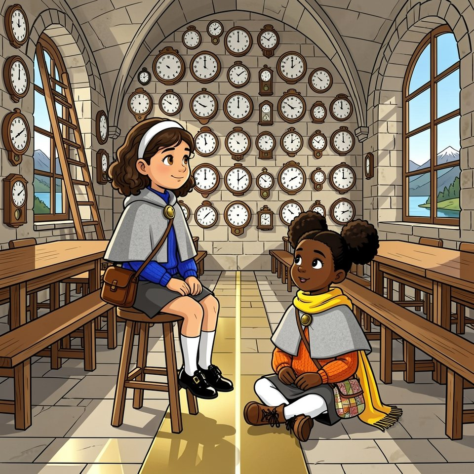

Titistoire › Les Galaxies (8-10 ans)
Imagine
Haute-Lanterne, épisode 7 sur 8 : un feuilleton à énigmes dans un vieux château-phare au milieu d'un lac.

▶ Écouter et regarder l'histoire
Gratuit, sans inscription : la voix lit, le texte suit mot à mot, les images tournent comme dans un album.
Le texte de l'histoire
Le vingt-huit, à Haute-Lanterne, il y eut trois sortes de silence. Celui du Levant, qui ne parlait plus au Couchant. Celui du Couchant, qui ne parlait plus au Levant. Et celui de Nour, sur son tabouret, au milieu, à qui personne ne parlait. Il restait quatre nuits à la Grande Lanterne, et pas une vérité à lui dire.
Tout s'était gâté l'avant-veille. Devant la même lanterne, Elias avait dit que Maître Tarek avait menti, Kenza que c'était Dame Mira, et la flamme n'avait bronché pour aucun des deux. Chacun avait crié à la triche. Puis Tom avait trop parlé, et les deux ailes avaient appris que Nour connaissait les deux moitiés depuis le premier soir.
Ce matin-là, Maya prit son assiette, sa tasse et son pain grillé, et fit une chose qui ne s'était jamais vue : elle enjamba le Trait. Pas pour aller au Couchant. Elle s'assit par terre, à côté du tabouret, en plein sur la ligne de cuivre. « Imagine que je ne sois d'aucune aile, moi non plus. Juste le temps d'une tartine. »
« Tu vas avoir des ennuis. — Sûrement. Dis-moi une chose. Avant-hier, tu regardais la lanterne. Elle a triché ? — Non. — Elle a pâli ? Même un peu ? — Non. Pour aucun des deux. » Maya mordit dans son pain. « Alors ils disaient vrai tous les deux. Et ça, vois-tu, je n'arrive pas à l'inventer. »
Tom arriva, traînant les pieds, et s'assit sur le Trait à son tour. Il s'excusa auprès de Nour en onze mots, qu'il avait comptés. Puis vint Sami, parce que Tom y était, et qu'un cuivre bien astiqué est plus tiède que la pierre. Cela faisait quatre personnes au milieu de la salle. Aux deux tables, les chefs regardaient ailleurs avec beaucoup d'application.
« Une échelle et des nombres, marmonna Tom. Ça me revient. Le jour de la leçon, j'ai dit quatre-vingt-dix-sept horloges. Maître Idris a dit cent. Il y avait une lanterne entre nous. — Elle n'a pâli pour personne, acheva Nour. Je l'ai vu. — Et pourtant il y en avait cent. J'avais tort. Elle aurait dû s'éteindre pour moi ! »
« Non, répondit lentement Nour. Tu le croyais. » Ils se turent, tous les quatre. Une lanterne franche ne sait pas compter les horloges. Elle ne sait pas ce qui est arrivé il y a trois cents ans. Elle sait une seule chose : si celui qui parle croit ce qu'il dit. Tom croyait ses quatre-vingt-dix-sept. Elias croyait sa légende. Kenza croyait la sienne.
« Donc personne n'a triché avant-hier, conclut Tom. — Et ça ne dit toujours pas qui a menti, dans le temps », bâilla Sami. Maya reposa sa tasse. Ses yeux s'agrandissaient, comme le premier jour, quand elle avait vu une espionne dans une valise. Mais cette fois, elle ne riait pas. « Imagine, souffla-t-elle. Imagine que personne n'ait menti. »
« Ils sont dans leur chambre, tous les deux. La lanterne est entre eux. Maître Tarek dit une chose vraie. Et la lanterne s'éteint. Dame Mira le regarde. Elle croit qu'il a menti : que croirais-tu d'autre ? Lui sait qu'il n'a pas menti. Alors il croit que c'est elle qui ment, en l'accusant. Et chacun le croit si fort qu'on le répète dans son aile pendant trois cents ans. »
C'était une histoire, et pour une fois nul ne l'interrompit. « Si c'est vrai, les deux légendes sont fausses, raisonna Nour. — Et sincères, ajouta Tom. — Il manque un morceau, objecta Sami. Une lanterne ne s'éteint pas toute seule. » Maya en convint. C'était le trou de son histoire. Qu'est-ce qui éteint une lanterne franche, à part un mensonge ?
Aucun des quatre ne trouva. Mais Tom connaissait la manière de régler une question : on refait la chose, et on mesure. « Il faut retourner dans la chambre. Tout remettre comme ce soir-là. Et regarder ce qui arrive. — Avec Elias et Kenza. Ce sont eux qui ont les légendes. — Ils ne se parlent plus. — Ils n'ont pas besoin de se parler. Seulement de s'asseoir. »
Le lendemain serait le vingt-neuf : le couloir existerait. Maya se chargea d'Elias. Elle lui dit que Kenza viendrait, et qu'un chef ne laisse pas l'autre chercher seul. C'était vrai, et elle n'eut rien à inventer. Sami se chargea de Kenza. Il lui demanda de venir, s'il te plaît. Elle en fut si étonnée qu'elle accepta.
Restait ce que Nour devait à Kenza. Le soir, à la Tanière, elle n'attendit pas l'heure des vérités. Elle prit sa lanterne éteinte et la posa par terre, entre leurs deux lits. « Je ne vais pas être polie, prévint-elle. Je ne sais pas très bien faire. Je te prie de m'en excuser d'avance. — Tu commences mal », observa Kenza.
« J'ai tenu ma parole. Mais je l'ai tenue exprès trop petite. Je voulais que quelqu'un trouve vos deux moitiés, et je ne voulais pas que ce soit ma faute. » La lanterne s'alluma. Nour avala sa salive. « Et je recommencerais. Ta carte dormait dans un coffre. Maintenant, on sait où est la chambre. » La flamme doubla.
Kenza regardait cette flamme. On ne discute pas avec une flamme pareille. « C'est la chose la moins polie qu'on m'ait dite depuis trois cents ans », déclara-t-elle enfin. Puis, du bout du pied, elle poussa la lanterne vers le lit de Nour. « Garde-la allumée. Elle te va mieux que les autres. » Sami applaudit, d'une seule main, pour ne pas se fatiguer.
Ce soir-là, Nour n'eut pas à chercher sa vérité du soir : sa lanterne brûlait déjà. Elle regarda sa valise, sous le lit. Elle ne la tira pas. Dehors, la pluie fine avait repris, cette pluie dont personne ne se plaignait. Nour s'aperçut qu'elle ne s'en plaignait plus non plus.
Le vingt-neuf, Elias et Kenza entrèrent dans la chambre aux deux fenêtres sans se regarder, chacun de son côté du trait de craie. Maya les attendait, les poings sur les hanches. « On refait le soir de la fâcherie. Elias, tu es Dame Mira : assieds-toi là. Kenza, Maître Tarek, ici. — Je suis qui je veux. — Aujourd'hui, non. »
« Les tabourets côte à côte, comme on les a trouvés. » Ils les rapprochèrent en grinçant des dents. « Une lanterne entre vous. » Nour posa la sienne, bien allumée. « Et les volets. Tom ? — Le premier jour, ils étaient ouverts tous les deux. Depuis trois cents ans. C'est moi qui les ai fermés, à cause de la poussière. — Rouvre-les. »
Tom poussa le volet du levant. Le jour entra, avec une odeur de lac. « Maintenant, Maître Tarek dit une chose vraie », ordonna Maya. Kenza leva le menton et regarda Elias dans les yeux. Tom poussa le second volet. « Maître Tarek n'a jamais rien volé à personne. » La lanterne s'éteignit.
« Ah ! cria Elias en sautant sur ses pieds. Tu as menti ! Devant tout le monde ! — Je n'ai pas menti ! — Elle s'est éteinte ! — Je n'ai pas menti ! » Ils étaient debout, nez à nez par-dessus le trait de craie, rouges tous les deux. Maya les contemplait, la bouche ouverte. Elle avait voulu refaire le soir de la fâcherie. C'était réussi.
« Tadam », fit une voix au ras du plancher. Sami s'était couché sous la table, comme toujours, et depuis un moment il se tortillait. « Il n'y a pas un coin tiède, dans cette chambre. Ça souffle d'une fenêtre à l'autre, en plein sur moi. » Il se souleva sur un coude, ce qui était beaucoup. « C'est un courant d'air. »
« Elle ne craint que deux choses, récita Nour, très pâle. Les mensonges et les courants d'air. Zora me l'a dit dans la barque, le premier matin. — Ça se mesure », décida Tom. Il ferma le volet du levant. Nour ralluma sa lanterne d'un « J'ai le cœur qui bat » tout à fait exact. « Kenza. Redis-le. »
« Maître Tarek n'a jamais rien volé à personne. » La flamme ne bougea pas. Tom rouvrit le volet. Le petit vent traversa la chambre, et la flamme se coucha, puis mourut. « À toi, Elias. Une chose vraie. — Je m'appelle Elias. » On referma, on ralluma, on rouvrit. La lanterne s'éteignit. « Je m'appelle vraiment Elias », protesta-t-il, par habitude.
Puis il se tut. Tout le monde se tut. Un soir, il y avait trois cents ans, deux amis s'étaient assis là, sur ces tabourets, leurs fenêtres ouvertes sur un soir très doux. L'un avait parlé. La flamme s'était couchée. Et aucun des deux n'avait songé à regarder les volets.
Kenza se rassit lentement. « Personne n'a menti », murmura-t-elle. Sa voix n'avait plus rien de grand. « C'est le plus grand courant d'air depuis trois cents ans. » On ne sut pas si elle allait rire ou pleurer. Elle fit les deux. Elias aussi ; mais lui se moucha dans son écharpe, pour qu'on ne le voie pas.
Quand il eut fini, il s'agenouilla. Il frotta la craie avec son écharpe jaune, du mur jusqu'au seuil, sans un mot et sans règle numéro un. L'écharpe en resta blanche d'un bout. Kenza le regarda faire. Puis elle prit le second tabouret, le remit contre le premier, et s'assit dessus.
« Nous cherchions une vérité de trois cents ans, rappela Nour. Une vérité qu'un Levant et un Couchant puissent dire ensemble. » Elias et Kenza se regardèrent. Ils la tenaient. Elle était toute neuve et très vieille à la fois, et ni l'un ni l'autre ne voulait l'user pour rien. « Pas maintenant, décida Kenza. On la garde pour le trente et un. »
Tom, lui, s'était remis à compter, et son résultat ne lui plaisait pas. « Il y a un ennui. Le dernier rayon du soir entre par cette fenêtre-ci. Le premier rayon du matin, par celle-là. Il faut donc ouvrir les deux volets. Et quand les deux sont ouverts… » Il n'acheva pas. Chacun regarda la lanterne de Nour.
« Il y en a un autre, ajouta Sami, qui trouvait rarement des ennuis. Une nuit entière à veiller. Les Levants dorment à neuf heures. Tout le château le sait, depuis la nuit de l'horloge. — Et les Couchants ne tiennent pas debout avant midi, riposta Elias. — C'est exact », reconnut Kenza, avec une grande dignité.
On referma les volets. On sortit ensemble, par le même bout du couloir, et nul n'y prit garde. Ce soir-là, au Perchoir, la vérité d'Elias fut la plus brève de sa vie : « J'avais tort. » Sa flamme monta si haut qu'elle noircit une poutre. Maya murmura : « Je n'avais rien inventé. » La sienne monta presque autant.
Comment faire entrer le dernier rayon du soir, puis le premier rayon du matin, dans une chambre où le moindre courant d'air éteint tout ? Et qui veillera toute une nuit, quand une aile s'endort à neuf heures et que l'autre ne se réveille qu'à midi ? Dans la salle des Horloges, l'horloge de personne avança d'un cran. Il en restait deux.
Épisode suivant : D'un soleil à l'autre